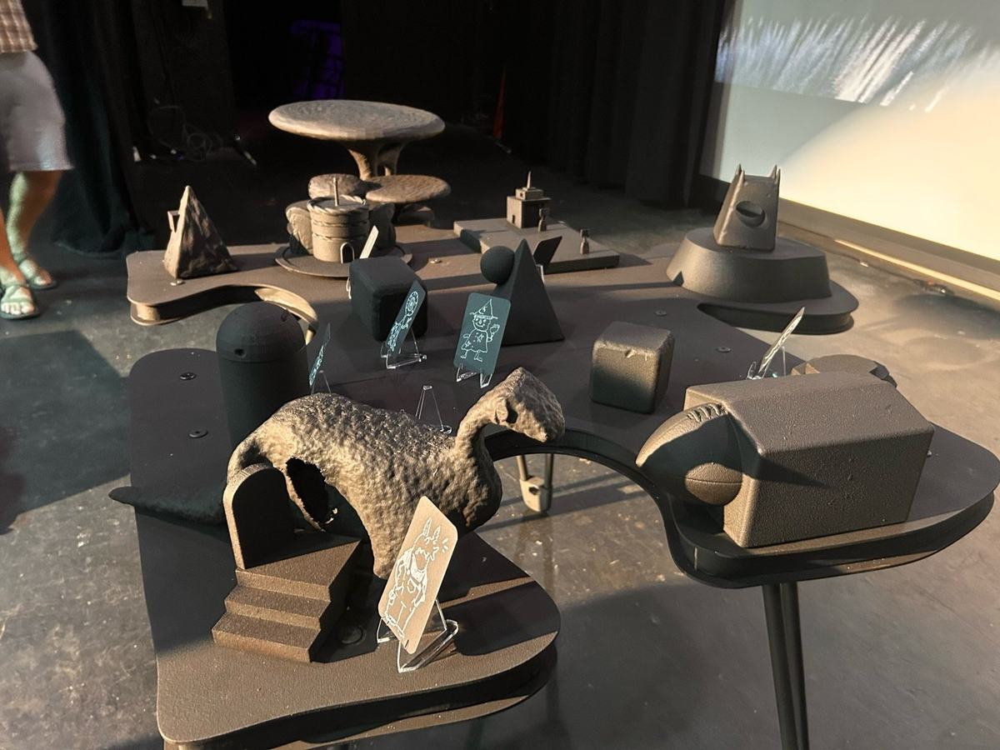
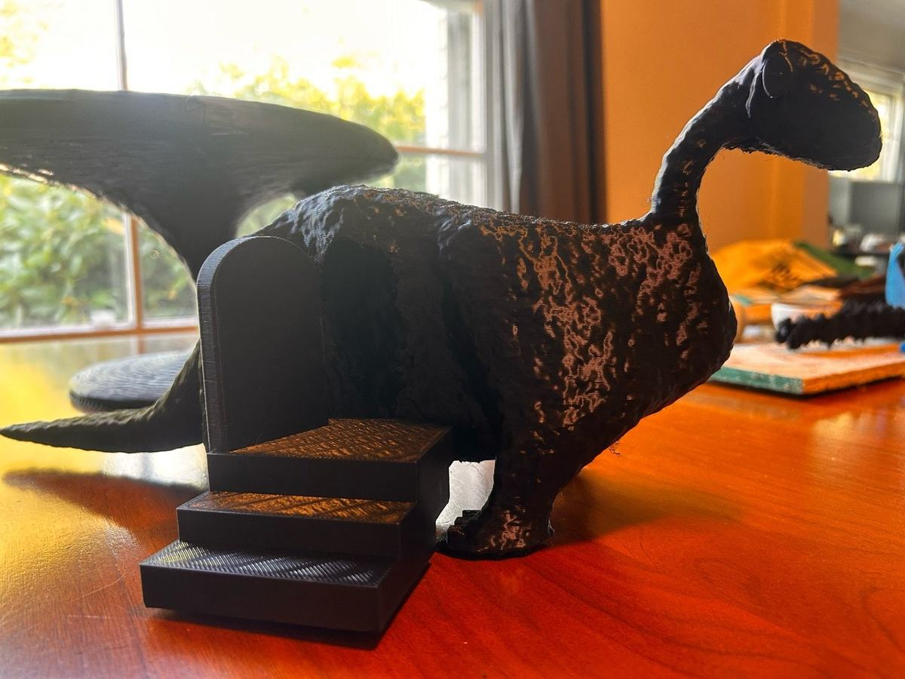
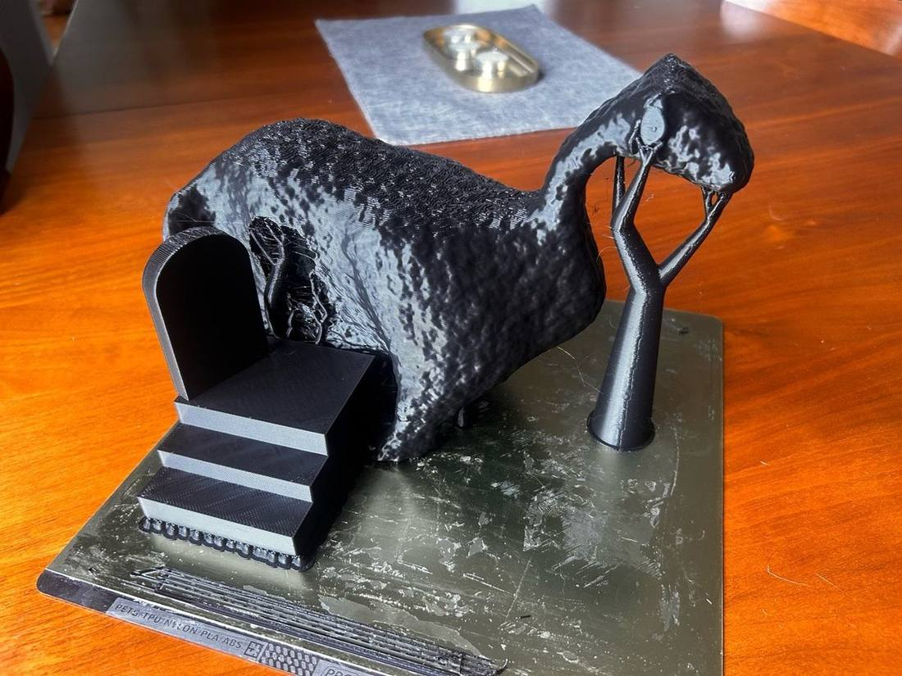
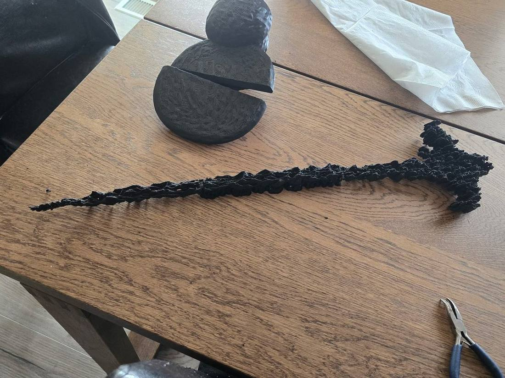
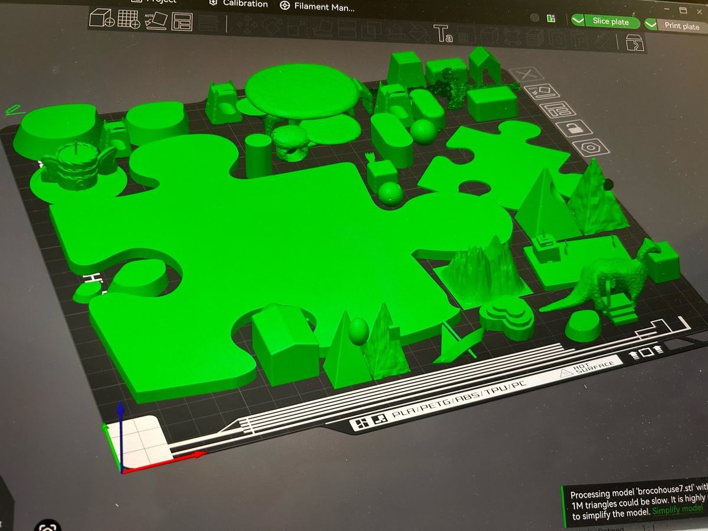
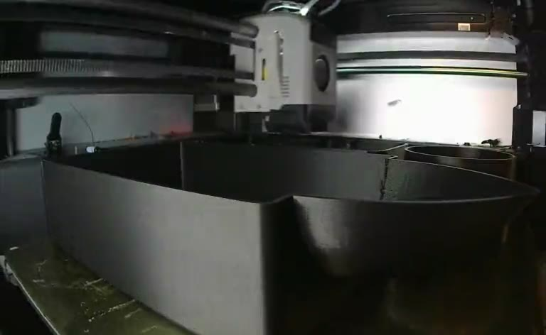
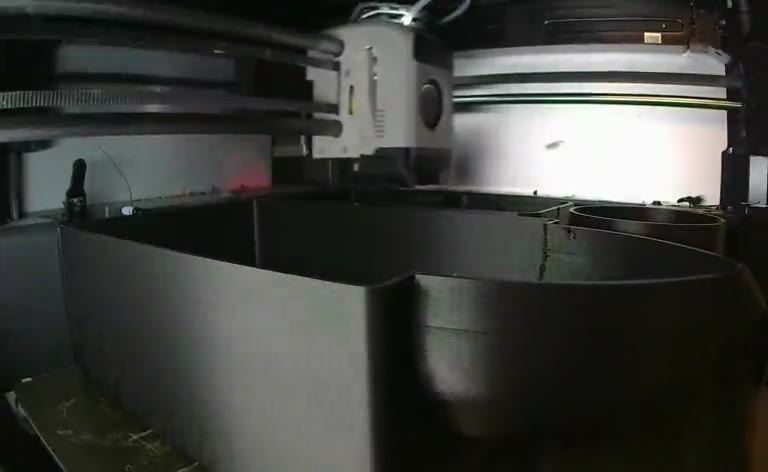
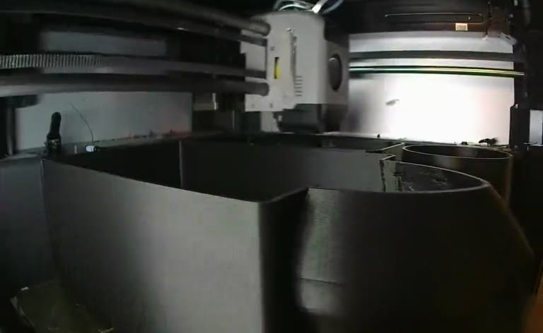
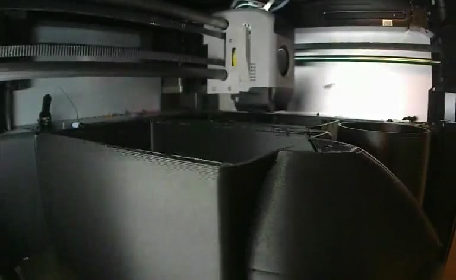

BRENDA ARTS is the studio of Spencer Garland — sculpture, animation, and playable worlds. The work turns a gallery into a game board: an island you can take apart, rebuild, and play on.
Counter of Sheep
Interactive installation

“Sheep” — the trailer, by Spencer Garland · playing muted — tap the Soundtrack chip, bottom right, for the music · watch with sound on YouTube








Spencer Garland is an artist and educator in Portland, Oregon. Through BRENDA ARTS he builds worlds that start as pencil geometry and end as physical, playable systems — printed, assembled, and handed to an audience. The same worlds carry into animation through motion capture, most recently in the OptiTrack volume at the University of Nebraska–Lincoln.
- BasedPortland, Oregon
- PracticeSculpture · animation · education
- CurrentCounter of Sheep — Aug 21–22, 2026
- ResidencyMotion capture, U. of Nebraska–Lincoln
- ScreeningsBlackStar Film Festival